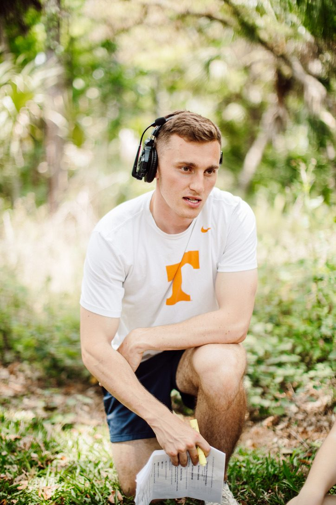

About Us
Passionate about stories that challenge us
The Team
Who We Are

Reagan
Director & Producer
After spending most of his life in Northern Michigan, Reagan went to Hope College and graduated with a business degree. But what he found most fascinating was storytelling. From a young age Reagan had spent most nights, and nearly every weekend watching movies, telling stories, and coming up with ideas. It wasn't until he took a creative writing course in college where his passion truly took off. When the idea was formed to move to Florida and shoot a short film it felt like not only an adventure, but an opportunity to pursue a passion. Inspired by great filmmakers and writers like David Lynch, Christopher Nolan, and countless others, Reagan has always believed heart came first. If a story could be felt, the scale would only amplify it to become something great.

Christian
Director & Producer
Christian is from northwestern Michigan. After earning a degree in History, he began directing short films and recently completed his third, Blood Symmetry. From the age of six, he wrote stories in spiral notebooks. After discovering the appendices for The Lord of the Rings film trilogy, he was drawn to filmmaking, recognizing it as a way to bring other worlds and the past to life in a tangible way. Later, he fell in love with literature and the complex, idea-driven films of Christopher Nolan. Today, he seeks to combine all these elements: complex ideas and fictional or historical realities brought to life with visceral tactility through the film medium.